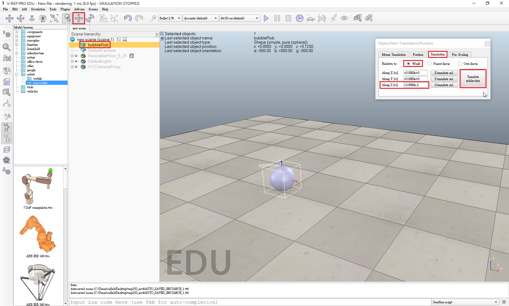
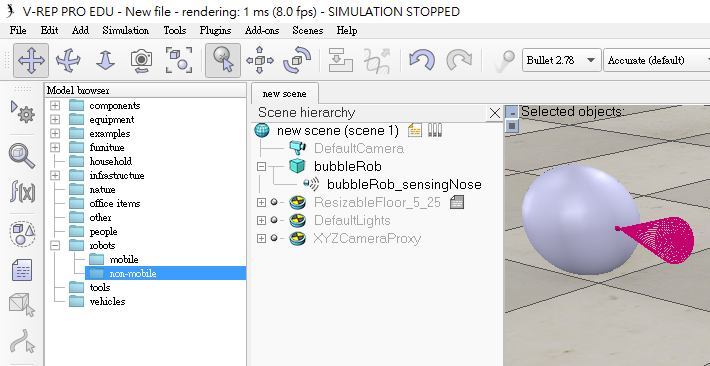
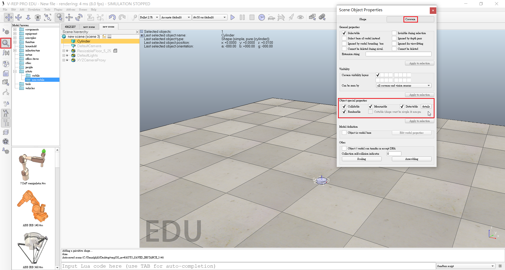
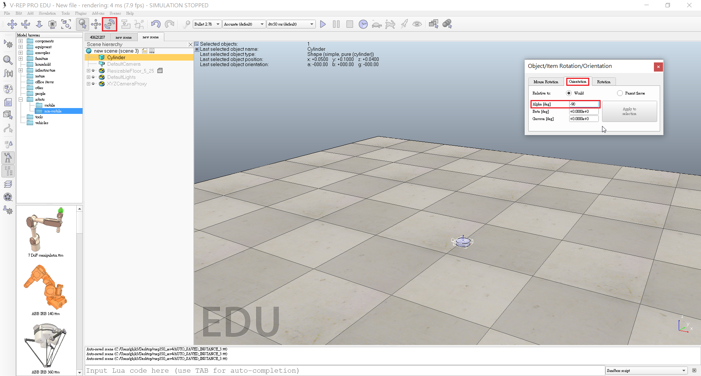
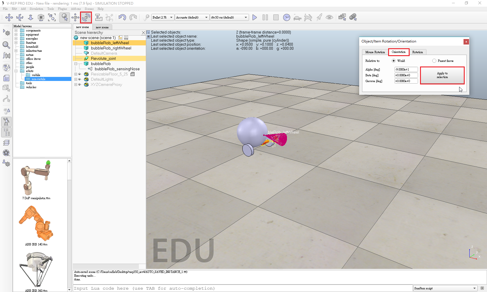

Tutorial << Previous Next >> Experience
Tutorial << Previous Next >> Experience
BubbleRob
- Add a primitive sphere of diameter 0.2 to the scene with [Menu bar --> Add --> Primitive shape --> Sphere].
- Adjust the X-size item to 0.2, then click OK.
-1 - Start the simulation (<control-space>, and copy-and-paste the created sphere (with <control-c> then <control-v>)

- Enable Collidable, Measurable, Renderable and Detectable in the object common properties for that shape.

- Open the position dialog on the translation tab, select the sphere representing BubbleRob's body, and enter 0.02 for Along Z.
- Make sure that the Relative to-item is set to World. Then we click Translate selection.
- Edit sphere's name. We enter bubbleRob and press enter.
 - Add a proximity sensor so that BubbleRob knows when it is approaching obstacles: we select [Menu bar --> Add --> Proximity sensor --> Cone type].
- In the orientation dialog on the orientation tab, we enter 90 for Around Y and for Around Z, then click Rotate selection.

- In the position dialog, on the position tab, we enter 0.1 for X-coord. and 0.12 for Z-coord.

- Open its properties dialog.
- Click Show volume parameter to open the proximity sensor volume dialog.
- Adjust items Offset to 0.005, Angle to 30 and Range to 0.15.

- In the proximity sensor properties, we click Show detection parameters.
- Uncheck item Don't allow detections if distance smaller than then close that dialog again.

- Edit proximity sensor's name. We enter bubbleRob_sensingNose and press enter.
Select bubbleRob_sensingNose, then control-select bubbleRob, then click [Menu bar --> Edit --> Make last selected object parent].
- This is what we now have:
 - Create a new scene with [Menu bar --> File --> New scene].
-9 - Enable Collidable, Measurable, Renderable and Detectable in the object common properties for that cylinder.
 - Set the cylinder's absolute position to (0.05,0.1,0.04) and its absolute orientation to (-90,0,0).
 - Change the name to bubbleRob_leftWheel.
- Copy and paste the wheel, and set the absolute Y coordinate of the copy to -0.1.

- We rename the copy to bubbleRob_rightWheel.
- Select the two wheels, copy them, then switch back to scene 1, then paste the wheels.
- Click [Menu bar --> Add --> Joint --> Revolute] to add a revolute joint to the scene.
- Keep the joint selected, then control-select bubbleRob_leftWheel. In the Position dialog, on the position tab, we click the Apply to selection button.

- Click Show dynamic parameters to open the joint dynamics properties dialog.

Tutorial << Previous Next >> Experience